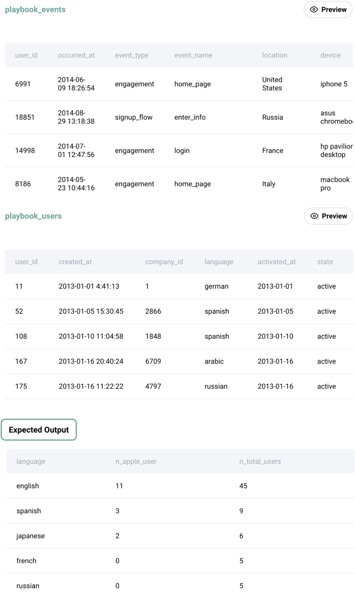

Question sourced from StrataScratch.com.
Database: MySQL
Find the number of Apple product users and the number of total users with a device and group the counts by language. Assume Apple products are only MacBook-Pro, iPhone 5s, and iPad-air. Output the language along with the total number of Apple users and users with any device. Order your results based on the number of total users in descending order.

/*
My strategy: Join the playbook_events and playbook_users tables.
Each row in this joined table represents an action associated with a
user's device, which has a specific language. In order to count the
total Apple users and total overall users for each language from this
joined table, the COUNT(DISTINCT) function must be used, in order to
avoid counting repeated user IDs. Group by language, counting the
distinct user IDs to get total overall users, and using conditional
aggregation to count the distinct user IDs associated with an Apple
device.
*/
SELECT pu.language,
COUNT(DISTINCT
IF(pe.device IN ('macbook pro', 'iphone 5s', 'ipad air'), pu.user_id, NULL)
) AS n_apple_users,
COUNT(DISTINCT pu.user_id) AS n_total_users
FROM playbook_events pe
JOIN playbook_users pu ON pe.user_id = pu.user_id
GROUP BY pu.language
ORDER BY n_total_users DESC;
/*
Alternative solution using a CASE statement instead of an IF statement:
*/
SELECT pu.language,
COUNT(DISTINCT
CASE WHEN pe.device IN ('macbook pro', 'iphone 5s', 'ipad air')
THEN pu.user_id ELSE NULL END
) AS n_apple_users,
COUNT(DISTINCT pu.user_id) AS n_total_users
FROM playbook_events pe
JOIN playbook_users pu ON pe.user_id = pu.user_id
GROUP BY pu.language
ORDER BY n_total_users DESC;